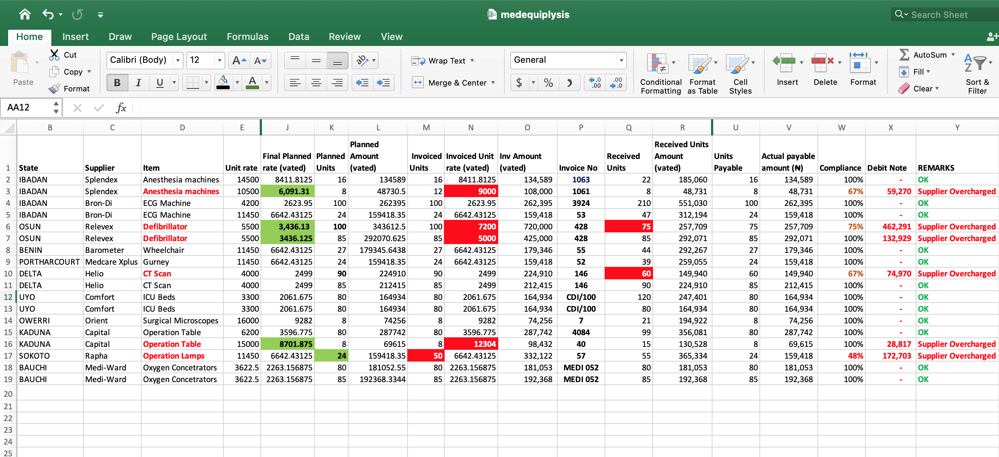
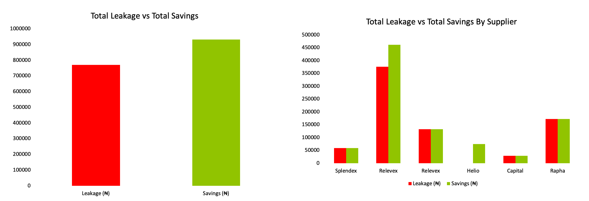
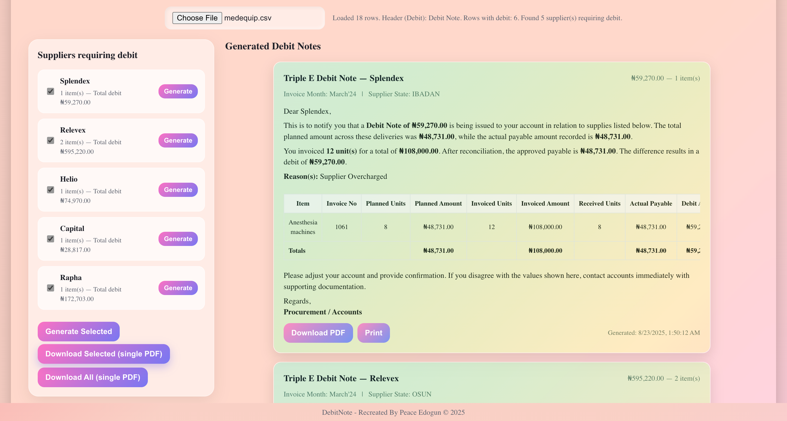
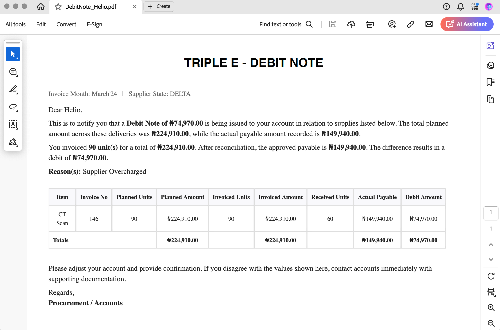

Vendor Debit Note Automation
Overview: Developed a system to automatically generate debit notes for overcharged suppliers at Triple E Diagnostics.
Impact: Reduced reconciliation errors and delivered measurable financial impact, including revenue savings of over 20% and saving 120+ hours per month in procurement operations.
Download Project File:
medequip.xlsxProject Case Study





Results & Impact
120+ hours saved per month
₦2,000,000 in overcharges recovered
100% accountability in supplier billing